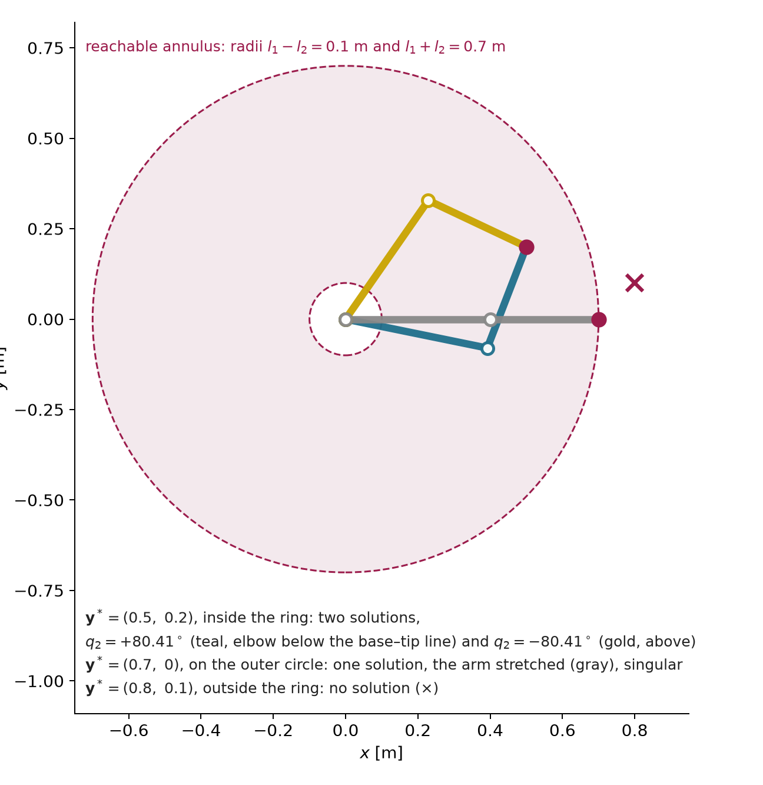
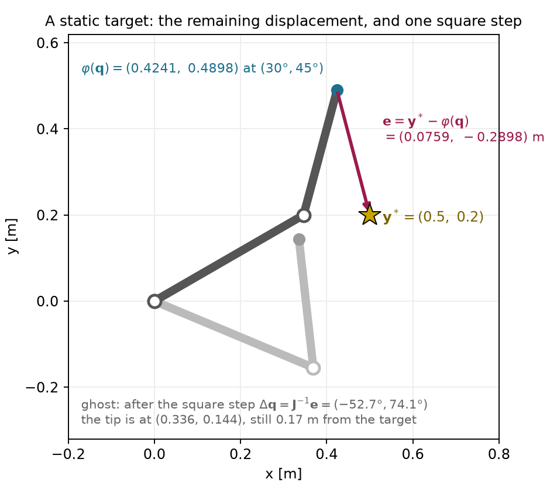

These sections are reproduced from the kinematics reading.
Geometry. For the two-link arm the set of reachable
tip positions, the workspace, is the ring between radii
l_{1} - l_{2} = 0.1\,\mathrm{m} and
l_{1} + l_{2} = 0.7\,\mathrm{m} (Figure
3). This ideal workspace ignores joint limits and obstacles and
identifies angles differing by a full turn. A target outside the ring,
including its central hole, has no solution. A target
on its outer circle has exactly one, the arm stretched
straight. A target strictly between the two circles has
two, the elbow bent one way or the other: for \mathbf{y}^{*} = (0.5, 0.2) they are \mathbf{q} = (-11.52^{\circ}, +80.41^{\circ})
and (55.12^{\circ}, -80.41^{\circ}).
For a reachable target away from singularities and active joint limits,
an arm with more joints than independent task constraints (n>m) can have a continuum
of solutions: a Panda (n = 7) holding
its gripper fixed (m = 6) can still
swing its elbow along a one-dimensional curve of configurations. This is
redundancy relative to a task. The same Panda with only
its fingertip position fixed has three constraints and, at full task
rank, four local freedoms remaining. The two-link arm’s two-position
task has n=m=2: its two discrete
solutions are not redundancy. (The Drake demo
drake/01b-redundancy-self-motion shows it: one slider moves
a Panda along that curve while its gripper stays on a mug.)

Return to the two-link inverse problem of §5 and to its target \mathbf{y}^{*}=(0.5,0.2) m, which lies inside the reachable ring. The two-link arm is at the worked configuration \mathbf{q}=(30^{\circ},45^{\circ}), and the task is the tip position. Unlike the two previous paragraphs, nothing here is a rate and there is no control period. The unknown is a change of the configuration guess, in radians, and the right-hand side is a displacement, in meters.
The current tip follows from (7): \varphi(\mathbf{q})\approx(0.424056,0.489778) m.
The remaining displacement is the target minus the current tip:
\mathbf{e}=\mathbf{y}^{*}-\varphi(\mathbf{q})\approx \begin{bmatrix}0.075944\\-0.289778\end{bmatrix}\ \mathrm{m},\qquad \lVert\mathbf{e}\rVert\approx0.2996\ \mathrm{m}.
The local equation comes from §6’s model of a small joint change. Asking the predicted displacement to equal the remaining one gives a linear equation for the unknown update:
\mathbf{J}(\mathbf{q})\,\Delta\mathbf{q}=\mathbf{e},\qquad \det\mathbf{J}=l_1l_2\sin q_2\approx0.0849.
Here \mathbf{J} is the 2\times2 matrix (9). Its determinant is nonzero, so it is invertible and the inverse of (11) applies with a displacement in place of a velocity.
The proposed update solves that equation:
\begin{aligned} \Delta\mathbf{q}&=\mathbf{J}^{-1}(\mathbf{q})\,\mathbf{e}\approx \begin{bmatrix}-0.920116\\1.293088\end{bmatrix}\ \mathrm{rad} =\begin{bmatrix}-52.72^{\circ}\\74.09^{\circ}\end{bmatrix},\\[4pt] \mathbf{q}+\Delta\mathbf{q}&\approx(-22.72^{\circ},\,119.09^{\circ}). \end{aligned}
Forward kinematics at the updated configuration, (7) again, gives
\varphi(\mathbf{q}+\Delta\mathbf{q})\approx \begin{bmatrix}0.335682\\0.143665\end{bmatrix}\ \mathrm{m}.
The remaining displacement at the updated configuration, with the same target-minus-tip convention as step 2, is
\begin{aligned} \mathbf{e}_{\mathrm{new}}&=\mathbf{y}^{*}-\varphi(\mathbf{q}+\Delta\mathbf{q})\approx \begin{bmatrix}0.164318\\0.056335\end{bmatrix}\ \mathrm{m},\\[4pt] \lVert\mathbf{e}_{\mathrm{new}}\rVert&\approx0.1737\ \mathrm{m}. \end{aligned}
The linear model predicted that the tip would land on the target,
because \mathbf{J}\Delta\mathbf{q}=\mathbf{e} holds
exactly. The arm lands 0.17 m away. The
target is reachable and the equation was solved correctly, but the
linear model is accurate only for small joint changes, as §6 showed, and
this update turns the elbow by 74^{\circ}. For comparison, the integration
step above moved the joints by at most 0.33^{\circ}, and forward kinematics after it
differs from the predicted 1 mm rise by
about 3\,\mu\mathrm{m}; the runnable
example at the end of this reading prints that actual tip increment. The
update did reduce the error, from 0.30
m to 0.17 m, but nothing in the
calculation guaranteed that. A proposed update is checked by evaluating
the forward kinematics, as step 5 did. Figure 4 shows the start, the
target and the arm after the update. All values are computed from
unrounded inputs; this reading’s code/kinematics_note.py,
the NumPy example after §10 and Deck 03’s code/two_link.py
(part (k)) print them.

Optimization I (Deck 04) starts from this calculation and answers the questions it leaves open: how far to trust one update, how to repeat it with a fresh Jacobian, how to measure the remaining error and when to stop. It writes the same problem with two conventions that are worth knowing now:
\mathbf{r}=\varphi(\mathbf{q})-\mathbf{y}^{*}=-\mathbf{e},\qquad \mathbf{J}\,\boldsymbol{\delta}=-\mathbf{r},\qquad f(\mathbf{q})=\tfrac12\lVert\mathbf{r}\rVert^{2},\qquad \nabla f=\mathbf{J}^{\top}\mathbf{r}.
The residual \mathbf{r} is the current tip minus the target, the opposite sign of \mathbf{e}, and the step is written \boldsymbol{\delta}, so the local equation \mathbf{J}\Delta\mathbf{q}=\mathbf{e} of step 3 is the same equation with the sign moved to the other side. The objective f is (8) with a factor one half in front. The half leaves the minimizer unchanged and makes the gradient \mathbf{J}^{\top}\mathbf{r} free of a factor of two. Appendix C.3 shows what repeating the update does on this example, as an illustration only.
Why it appears in robot learning. The calculations of §§7.1–7.6, from the velocity request to the joint-position update, appear in a learning system as follows. An end-effector velocity action becomes a joint command through this robot-specific calculation. The policy’s training data may or may not cover configurations where it behaves poorly. The same task-space command can be passed to different arms, each using its own Jacobian, but their joint rates, reachable motions and limits differ. A common action format helps define a shared interface; it does not by itself guarantee transfer.
Must understand: requested versus achieved task velocity; the square case; the loss of an instantaneous direction at the stretched arm and the large joint rates a request can demand near it; several valid answers to one request; the pseudo-inverse’s two decisions (least squares, then minimum norm), including that an unreachable component is dropped; null-space motion as the difference of two valid answers, defined relative to the stated task; integration as rate times time; one joint-position update proposed from the local model, checked by forward kinematics, and why its remaining error can be large.
Recognize: damping as a tradeoff between tracking and joint speed (Appendix C.2 has the step and its derivation); the null-space projector; geometric pose errors expressed in the Jacobian’s frame; the singular value decomposition (SVD) as the construction behind \mathbf{J}^{+}; Optimization I’s residual sign and half factor. Appendices B and C hold the derivations, and §8 describes the SVD.
Deferred: the SVD derivation of the pseudo-inverse (long reading §9.2); the control and convergence of the repeated step (Optimization I; Appendix C only illustrates it); general orientation-residual derivatives (Appendix B.2 states only the rule near agreement); constrained differential IK (the optimization block).